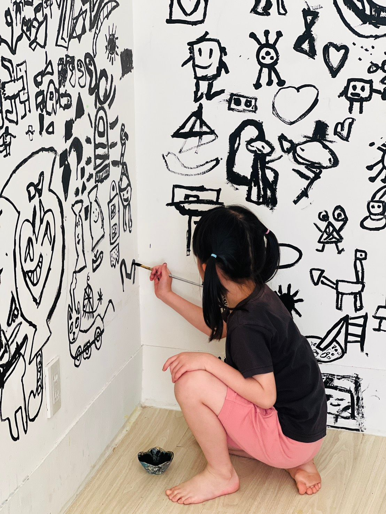
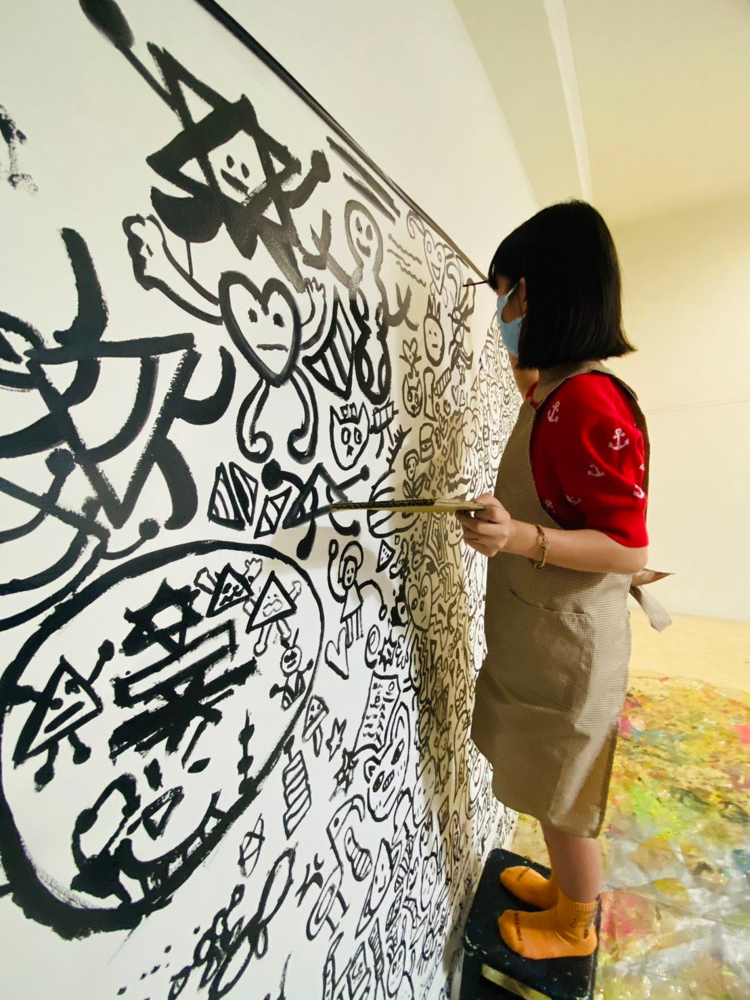

主題介紹
｜當生活只剩黑與白，孩子還能創造什麼？｜ 在大綠地的色彩學課程中，我們不是從色票開始，也不是從理論出發，
我們帶孩子從生活裡看見色彩、感受色彩、認識色彩的力量。
這一次，我們邀請孩子走進一位英國藝術家的創作世界，啟動一場黑與白的創意挑戰。
當世界只剩下兩種顏色——你還看得見自己內心的色彩嗎？
我們想讓孩子知道：
1、色彩不只是眼睛看到的豐富，更是一種思考方式。
2、黑與白的限制，不是創作的終點，而是想像力的起點。
｜當生活只剩黑與白，孩子還能創造什麼？｜ 在大綠地的色彩學課程中，我們不是從色票開始，也不是從理論出發，


｜當生活只剩黑與白，孩子還能創造什麼？｜ 在大綠地的色彩學課程中，我們不是從色票開始，也不是從理論出發，
我們帶孩子從生活裡看見色彩、感受色彩、認識色彩的力量。
這一次，我們邀請孩子走進一位英國藝術家的創作世界，啟動一場黑與白的創意挑戰。
當世界只剩下兩種顏色——你還看得見自己內心的色彩嗎？
我們想讓孩子知道：
1、色彩不只是眼睛看到的豐富，更是一種思考方式。
2、黑與白的限制，不是創作的終點，而是想像力的起點。
在這堂課中，孩子以最簡單的媒材——黑色顏料與毛筆，
在牆面上創作出屬於自己的角色、場景與故事。
他們用：
這不是單純的黑白畫，
而是孩子在有限中發展出的創造力與風格意識。
色彩，不只是「什麼顏色配什麼」的選擇題，
而是孩子對生活的感知、對世界的觀察、對自己的理解。
在大綠地，色彩學不是在教顏色，是在打開一種看見世界的方式。